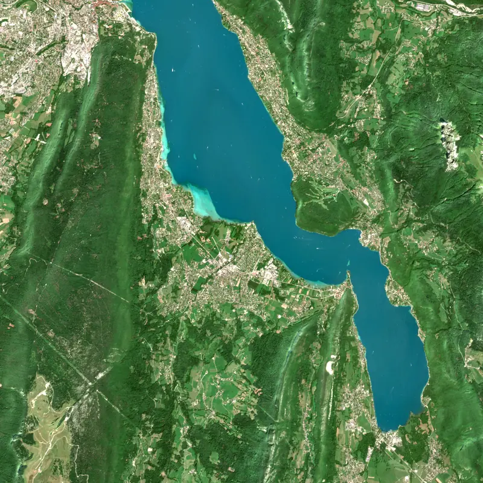

Rumi
- Rumi 0.30.0, GPL-3.0 licence. The format may change before 1.0.
The example
This page follows one example from start to end. It is a crop of Lake Annecy, in the French Alps, from the Sentinel-2 image of 8 August 2025. The crop is 1280 by 1280 pixels at 10 m, in four bands (blue, green, red and near infrared).

The code reads the four bands from the public Sentinel-2 archive and writes them as a Rumi file.
import geozl
import numpy as np
import rasterio
import rumi
from rasterio.windows import Window
scene = (
"https://sentinel-cogs.s3.us-west-2.amazonaws.com/sentinel-s2-l2a-cogs/"
"31/T/GL/2025/8/S2A_31TGL_20250808_0_L2A/"
)
names = ["B02", "B03", "B04", "B08"]
window = Window(3980, 1244, 1280, 1280)
bands = []
for name in names:
with rasterio.open(scene + name + ".tif") as src:
bands.append(src.read(1, window=window))
transform = src.window_transform(window)
crs = src.crs
image = np.stack(bands)
frames = rumi.frames(
image,
"b (row h) (col w) -> row col b (h w)",
tile_size=256,
)
for frame in frames:
payloads = [
geozl.compress(frame.data, graph=geozl.graph(frame.data, recipe))
for recipe in ("planar>zigzag>pfor", "planar>zigzag>lanes")
]
frame.compressed = min(payloads, key=len)
path, header = rumi.write(
"annecy.rumi",
frames,
bands=names,
time=["2025-08-08"],
transform=transform,
crs=crs,
)rumi.frames cuts the image into frames of one band and one tile of 256 pixels. geozl.graph and geozl.compress compress each frame with two recipes that decode on the GPU, and the smaller result is kept. rumi.write writes the file and returns its header.
The file, annecy.rumi, is 7,274,593 bytes. The header is 232 bytes. The rest of the page takes both apart.
What Rumi is
Training efficiently on Earth observation data means reading thousands of small windows, from many files, as fast as a GPU can take them. Rumi is a raster format built for that read.
A Rumi file holds an Image (B, Y, X) or a temporal Cube (T, B, Y, X), cut into tiles. Each tile is compressed on its own by GeoZL, so a read fetches and decodes only the tiles under its window.
rumi.write returns the file and a small header. You keep the header outside the file, in a catalog or a dataset index. It locates every tile, so a reader goes straight to the bytes it needs without opening the file first.

Frames
A frame is one compressed piece of the file. The writer chooses what a frame holds. It can be one band of one tile, or every band and time step at one grid position.
That choice is a pattern, written in the notation of einops and given to rumi.frames. The left side names the axes of the array, and (row h) splits the image rows into the tile row and the row inside the tile, as (col w) does for columns.
On the right, the axes outside the brackets number the frames, and the axes inside the brackets are stored together in one frame. So b (row h) (col w) -> row col (b h w) keeps every band of a tile in one frame, and b (row h) (col w) -> row col b (h w) gives each band its own frame. The pattern is fixed for the whole file.

Every frame is a complete OpenZL frame that carries its own codec graph. A land tile and an ocean tile in the same file can use different GeoZL recipes, and a reader needs nothing else to decode either one.
The frame unit
The file does not keep the pattern as text. It keeps one number, the frame unit, in the IFD and in the external header.
The frame unit says what one frame holds. When a frame holds one tile, it also says in which order the frames are numbered. When a frame holds a cell, it says in which order the samples sit inside the frame.
| frame unit | one frame holds | right side of the pattern |
|---|---|---|
| 0 | one tile, frames numbered by band, then by time step | row col b t (h w) |
| 9 | one tile, frames numbered by time step, then by band | row col t b (h w) |
| 1 | a cell, with the bands, or the time steps, as planes | row col (b h w) |
| 2 | a cell, with the bands, or the time steps, side by side in each pixel | row col (h w b) |
| 3 to 8 | a cell of a Cube, with bands and time steps in one of the six orders | row col (b t h w), row col (t b h w) and so on |
The order inside a cell frame changes only how well it compresses. A reader still fetches the whole frame. Not every unit fits every file. A file with one band and one time step always uses 0, and units 3 to 9 need a Cube with more than one band.
The Lake Annecy file uses frame unit 0, one band of one tile per frame. Its 25 grid positions and 4 bands give 100 frames. With frame unit 1, the same image would have 25 frames, each holding the 4 bands of one tile.
A reader needs the frame unit twice. It gives the number of frames, and it turns a grid position, a band and a time step into a frame index. Both steps are in From a tile to its bytes.
Predictable first, unpredictable last
Every choice in the layout serves one task. A read asks for a window, and the reader must find the bytes of every frame under it.
A frame, remember, is one compressed piece of the file. It holds one tile or a whole cell, as the frame unit says. Either way it is one run of bytes, and the reader needs two numbers to fetch it. Its offset is the byte where it starts, and its length is how many bytes it has.
Rumi lets a reader get both numbers with arithmetic alone, without searching the file. For that, the layout follows one rule. A part whose size can be predicted goes first, at a fixed place. A part whose size cannot be predicted goes after it, where its size moves nothing that came before.
The rule holds in every Rumi file. The figure below steps through it on the Lake Annecy file. The parts in green have a size that is known before anything is compressed (The size of the internal header). The parts in orange have a size that is known only after.
A reader walks the same path. It knows where everything in the first 1,652 bytes sits before it reads them. It finds a frame by adding up the sizes of the frames before it. And it never needs the trailer to find a frame.
Inside the file
The file is complete on its own. Everything a reader needs, from the shape to the CRS to the band names, is inside it.

Every Rumi file has the same five parts, in the same order. They are the file header, the IFD, the IFD values, the frames and the trailer. Each part starts right where the previous one ends, with no empty bytes between them. The figure below shows them in the Lake Annecy file. Move the mouse over a part, or over one of its 100 frames, to see what it holds and at which bytes it sits.
The fixed IFD
The IFD is the table that describes the file. Rumi borrows its layout from BigTIFF, but a Rumi file is not a TIFF.
Unlike in a TIFF, the IFD is fixed. It always starts at byte 16, always has the same 13 tags in the same order, and is always 276 bytes long. A reader does not have to parse it to know where a tag is.
Each tag gets an entry of 20 bytes with room for 8 bytes of value. A value that fits, such as the image width, sits inside its entry. A longer one, such as the offsets of 100 frames, goes right after the IFD, and its entry holds only the byte where it starts. Those long values, one after another, are the IFD values.
The 13 tags
Every file carries all of them, in this order, and no other. Point at an entry to see its value in the Lake Annecy file.
The CRS is an EPSG code in the GeoKeyDirectoryTag, together with whether it is projected or geographic and whether a pixel is an area or a point. The affine transform is a 4 by 4 matrix of doubles in the ModelTransformationTag. The two always take 160 bytes, and a file with no georeferencing stores a defined placeholder, so the layout never changes.
Rumi supports only EPSG codes. A CRS given as WKT or as a PROJ string is not supported.
The trailer
The trailer describes the data without locating it. It holds the text of every band and the date of every time step. The figure below shows the 48 bytes of the Lake Annecy trailer, in its four groups. Move the mouse over a field to see its value.
Each band text is stored as its length in 2 bytes, then its bytes. A reader reads the length, then that many bytes, and the next length starts right after them. The IFD gives the number of bands, so the reader knows when the texts end. The recommended text names the band, describes it and gives its wavelength, such as B4, Red, 665nm. The Lake Annecy file uses short names, so its four texts take 20 bytes.
Why it goes last. A text can have any length, so nobody can predict the size of the trailer. Type a longer text for a band in the figure below. With the trailer last, the first frame stays where it is. If the trailer came before the frames, the first frame would move with every letter, and every frame after it would move too.
Finding the trailer takes no extra field. It starts where the last frame ends and runs to the end of the file.
How the dates stay small. The trailer does not store each date in full. It stores the first date and a step, which together draw a regular line of dates. Each real date is then stored as its residual, how far it falls from its place on that line.
A zigzag code turns the signed residuals 0, -1, 1, -2, 2 into 0, 1, 2, 3, 4, and they are packed in as few bits as the largest one needs. The figure below is a Cube of eight dates five days apart. Click a date to drop it, as a cloudy date would be dropped. With all eight kept, every date sits on the line and the residuals take no bytes at all.
A reader never uses the trailer to find or decode a frame. rumi.info reads it to report the band names and dates.
The size of the internal header
Everything before the frames, the file header, the IFD and its values, is the internal header. Its size depends only on the number of bands B and the number of frames N, never on how well the frames compress. Only values longer than 8 bytes add to the 292 bytes of the file header and the IFD.
size = 16 + 276 + values
values = 128 # ModelTransformationTag
+ 32 # GeoKeyDirectoryTag
+ (8 * N if N >= 2) # TileOffsets
+ (4 * N if N >= 3) # TileByteCounts
+ (4 * B if B >= 5) # BitsPerSample and SampleFormatA file with 4 bands in 4 frames starts its frames at byte 500, and one with 4 bands in 100 frames at byte 1,652. rumi.frame_start returns that byte from the shape, the pattern and the tile size, before anything is compressed.
The external header
The external header is a small record that tells a reader where every frame of a file is. A write returns it next to the file, and you keep it outside the file, next to the path in your dataset index.

Why it exists
The file alone is enough to read. But a reader that starts from the file needs two requests. The first fetches the IFD to learn where the frames are. The second fetches the frames.
A training loader reads windows from thousands of files. From the files alone, each one costs that first request, or a cache of IFDs in every worker. The external header removes the first request. It is a shortcut built for training.
What it holds
A fixed part of 32 bytes, then the size of every frame. The figure below shows the 232 bytes of the Lake Annecy header. Point at a field, or at the size of one frame.
There are no offsets in it, and no band names, dates or CRS. Those stay in the file.
Why it stores no offsets
The figure below compares three headers that locate the same 100 frames. The first is a GeoTIFF of the Lake Annecy data, written by GDAL as a BigTIFF, with offsets of 8 bytes like Rumi. The second is the internal header of the Rumi file. The third is its external header. Point at a part to see what it holds.
The GeoTIFF and the internal header are almost the same. Both store an offset and a size for every frame, which is 1,200 of their bytes. Written as a classic TIFF, with offsets of 4 bytes that limit a file to 4 GB, the GeoTIFF header would take 1,218 bytes. The external header stores no offsets at all.
A GeoTIFF has to store every offset, because its tiles can sit anywhere in the file, in any order and with gaps between them. A Rumi file has no such freedom. Its frames start right after the internal header, in frame order, with no gaps. So every offset follows from the sizes before it.
offset[0] = 16 + 276 + values # 1,652 here
offset[k] = offset[k-1] + size[k-1]
= offset[0] + size[0] + ... + size[k-1]In the Lake Annecy file, frame 2 starts at 1,652 + 80,707 + 80,328 = 162,687. A reader adds up the sizes once, in memory, and never needs a stored offset.
The sizes shrink too. No frame is smaller than 38,991 bytes, so the header stores that number once, as count_min, and each size as how far it is above it. The largest difference, 51,867, fits in 16 bits, so the 100 sizes take 200 bytes instead of 400. With its fixed part of 32 bytes, the external header is 232 bytes.
size[k] = count_min + residual[k] # count_bits bits eachFrom a tile to its bytes
With the header, a reader finds the bytes of any tile with arithmetic alone. Pick a tile on the image and a band, and the steps fill in with the numbers of the Lake Annecy file.
The same steps hold for any file. Only the frame index changes. When a frame holds a tile, as here, the band and the time step are part of the index. When a frame holds a cell, the index is the grid position alone. The reader then fetches the whole cell, decodes it, and keeps the bands and time steps it asked for.
tiles_across = ceil(image_width / tile_width)
tiles_down = ceil(image_length / tile_length)
g = tiles_across * tiles_down
N = g * B * T if frame_unit in (0, 9) else g
size[i] = count_min + residual[i] # residuals of count_bits bits each
base = 16 + 276 + values # the size of the internal header
offset[k] = base + k * count_min + sum(residual[0:k])
length[k] = size[k]
spatial = row * tiles_across + col
k = (spatial * B + b) * T + t # frame unit 0
k = (spatial * T + t) * B + b # frame unit 9
k = spatial # a frame holds a cellStateless reads
With the header in hand, a read needs no state. The reader keeps no open files and no cache.
rumi.read takes a path, its header and a window, works out the byte ranges, and fetches them in one round of range requests. rumi.read_many reads one window from each of many files as a single batch.
That works the same on a local disk and in object storage. Any worker of a data loader can read any window of any file, in any order, with nothing to warm up first.
Always rebuilt from the file
Every field of the external header is also in the IFD of the file. So the external header can always be rebuilt from the file, and rumi.info does exactly that. A file never depends on its external header.

Where to go next
| Read and write | Worked code for images, cubes, layouts, windows, sources and batches. |
|---|---|
| How Rumi reads | One read followed through the code, from the Python call to the decoded tensor. |
| Specification | The file format, with everything needed to write a reader. |
| API | Every call, in Python, C, R, Julia and JavaScript. |